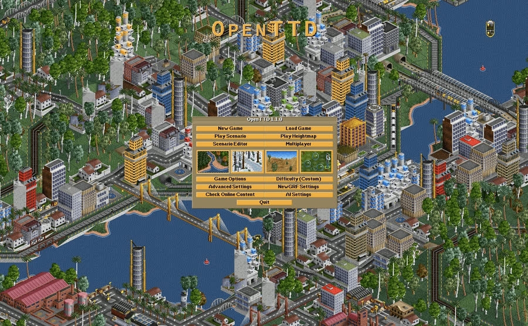

OpenTTD

Um simulador de transportes de código aberto que aprofunda conceitos de logística e cadeia de suprimentos.
Créditos da imagem: Wikimedia CommonsOpenTTD é um projeto de código aberto que recria e expande o clássico "Transport Tycoon Deluxe". Diferente do estilo minimalista do Mini Metro, aqui a simulação é mais completa: o jogador administra uma empresa de transportes responsável por conectar cidades e indústrias através de trens, caminhões, navios e aviões, cada um com sua própria malha de rotas, estações e horários.
O núcleo do jogo é essencialmente uma cadeia de suprimentos: indústrias produzem matérias-primas (como carvão, madeira ou minério) que precisam ser transportadas até outras indústrias ou cidades para virarem produtos de maior valor (energia, papel, bens de consumo). Definir as melhores rotas, dimensionar a frota, evitar gargalos nas estações e manter tudo lucrativo são desafios que lembram bastante o dia a dia de planejamento logístico do mundo real.
Por ser um projeto de código aberto mantido pela comunidade há mais de duas décadas, o jogo é gratuito e recebe atualizações constantes, incluindo suporte a mods e cenários criados por jogadores.
Uma boa forma de conhecer melhor o jogo é pelo site oficial do projeto, onde também é possível baixar o jogo gratuitamente.
O OpenTTD chega mais perto da minha experiência prática do que o Mini Metro: a lógica de dimensionar frota, evitar gargalo em estação e manter a rota lucrativa é parecida com decisões que já vi (e tomei) em operações reais de transporte. O que o jogo simplifica bastante é justamente a parte que mais consome tempo na logística real - a parte fiscal e documental. Emitir nota fiscal, cumprir prazos de exportação e importação e lidar com as etapas burocráticas de entrada e saída de mercadorias não aparecem em nenhum momento do jogo, mas ocupam boa parte do trabalho de quem administra uma cadeia de suprimentos de verdade.